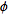
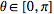
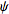

Joël
Sommeria, revised March 2008
1-Generalities:
1.1
Aim:
This Matlab toolbox is a set of
Graphic User Interfaces (GUI) and related functions, designed to scan
and
analyse images, vector and scalar fields, in two or three dimensions.
It can be used with a wide variety of input data: all image
formats recognised by
Matlab (function imread.m),
.avi movies
(after installation of the appropriate codex), binary files with the
format NetCDF. The package is
however particularly designed for laboratory data obtained
from
imaging systems: it includes a GUI to run the Particle
Image Velocimetry
software CIVx of civproject, see http://www.civproject.org,
as well as tools for geometric calibration, masks, grid generation and
image pre-processing (background removal), and editing of xml
documentation files. Stereoscopic PIV, PIV-LIF
and 3D PIV in a volume (still under development) are handled.
This package can be used
without knowledge of
the Matlab language, but it is designed to be complemented by
user
defined Matlab functions, providing flexibility for further data
analysis. It provides convenient tools to manage a set of
processing function with a standardized input-output system.
1.2
The package:
The master program
is a Matlab GUI, made of a
Matlab figure uvmat.fig
and an associated set of functions in
the file uvmat.m. The menu bar at the top of the GUI, push
buttons and editing box in the
uvmat.fig
start the Matlab functions in uvmat.m
(Callback
functions). The directory UVMAT
also contains the following set of GUI, which can be called by push
buttons in
uvmat.fig,
or
opened directly from the Matlab prompt.
- civ.fig: run
the software for Particle Imaging Velocimetry CIVx
- editxml.fig:
display and edit xml files according to xml schema
- geometry_calib.fig:
determines geometric calibration parameters for relating image to
physical coordinates
- get_field.fig: select coordinates
and field in a general NetCDF file
- series.fig: apply various
processing functions to series of fields
- set_grid.fig: creates grids for
PIV
- set_object.fig: creates and edits
geometric objects used to project data: points, lines, planes...
Functions in the UVMAT
directory are called by these GUIs.
These are used to generate file names, read files and plot data, and
perform various ancillary tasks. Type 'help fct_name' to get detail
information on the function named fct_name, or open it with an editor.
Help
and
documentation:
To install the
package, uncompress the whole directory UVMAT and read
the instructions in the file
README_INSTALL.txt
contained in the sub-directory UVMAT_DOC. This directory also
contains the current help file
uvmat_doc.html
and a sub-directory
FUNCTIONS_DOC
with detail documention for all functions. Finally a tutorial
UV_DEMO is
also available (outside UVMAT) with test data
files.
The current help file is
accessible on-line from each of the GUIs. A short
comment about each GUI uicontrol (push buttons,
edit
boxes, menus..), as well as the name of this uicontrol, is provided as
a tool tip window by moving the
mouse over it. In this help document, the names of GUI uicontrols are
quoted
with
bold
characters, names of files in the package are
underlined,
and text on the matlab workspace is under quotes ' '.
Features not yet implemented or tested (in particular 3D features) are
marked by **.
Copyright
and licence:
Copyright Joel Sommeria, 2008, LEGI / CNRS-UJF-INPG,
sommeria@coriolis-legi.org.
The
package UVMAT is free
software; it can be redistributed and/or modified it under the terms of
the GNU General Public License as published by the Free Software
Foundation; either version 2 of the License, or (at your option) any
later version.
UVMAT is
distributed in the hope
that it will be useful, but WITHOUT ANY WARRANTY; without even the
implied warranty of MERCHANTABILITY or FITNESS FOR A PARTICULAR
PURPOSE. See theGNU General Public License (file
COPYING.txt) for more details.
1.3
Overview of the GUI uvmat.fig:
Type 'uvmat' in the Matlab
prompt to display
the GUI.
Then the path and date of the version of uvmat.m
used is
displayed in the central display window. During opening, the
program checks that the Matlab path to all the functions called by
uvmat
are in the
same directory UVMAT
as uvmat.m,
using the function
check_functions.
Indeed a function with a higher priority path
could
override a function of the toolbox with the same name (see the Matlab
help 'help path'). The list of overridden functions is given in the
central display window at the opening of the uvmat interface.
The name of each uicontrol
(push
buttons, edit boxes, menus..) on the GUI can be displayed in
a tool tip window by moving the
mouse over it: it is followed by a short help comment. The name is also
displayed in the window text_display_1,
at the upper right of the GUI. The red pushbuttons command the main
actions, while the
green ones command ancillary or help actions. Links with
other
interfaces are in magenta. The current activation of an
uicontrol
is indicated by a yellow color.
The menu bar Open/Browse...at
the top
left allows to browse the directories to open files. The last
previously opened files can be also directly accessed in the same menu.
After selection,
the file names are decomposed into path, root name, index and
extension,
displayed in the top edit boxes. The input file name, as well
as
other personal information, is stored for convenience in a
file (uvmat_perso.mat)
automatically created in the user preference directory of Matlab
(indicated by the
Matlab command 'prefdir'). Browsers then read default input
in this file. A corruption of this file uvmat_perso.mat may
lead to problems for opening uvmat, type reinit on the
Matlab prompt to delete it.
A choice of input field ( 'image',
'velocity'... ) can be made by the menu Fields.
Two file series can be
simultaneously opened and compared using the check box SubField ('-') at
the upper left.
Once a root name has been
introduced, navigation among the file indices is provided by
the push buttons runplus
( '->')
and runmin
('<-')
at the upper left. The push button REFRESH
reactualizes the current plot on the interface.
Parameters for the display of
scalars/images and vector fields are
defined in the frames SCAL
and VEC
respectively on the right
side.
The push buttons calib.
, mask, grid are used to
create respectively a geometric calibration of the images, masks and
grids used for PIV.
The button CIV
opens the
interface civ.fig or Particle
Imaging Velocimetry. The menu bar Run/Field series opens the
interface series.fig
for analysing field series.
1.4
General tools:
Mouse
motion: the local
coordinates and field values are obtained by moving the mouse over any
plotting axes in the uvmat system. This is displayed in the four text
boxes text_display_1,
_2, _3, _4 on the upper right.
Zoom: a zoom rectangle
can
be cut in any plotting axes by pressing the mouse left button, moving
the mouse while the button is pressed, and releasing the button to end
the operation. The plot in the enclosed rectangular region is
reproduced in a new figure. Zoom can be alternatively obtained in the
initial figure by selecting the check box zoom on the right of the
uvmat interface, and pressing the mouse left button on the figure. Zoom
out by pressing the right mouse button. The zoomed
region can be translated through the initial field by
pressing the directional arrows of the key board.
Other mouse operations:
if an object creation option is selected, or the options calib. or
mask, mouse action products specific effects, see the corresponding
sections. These actions override the zoom.
Keyboard
short cuts: the activation of the push buttons runplus ( '->')
and runmin
('<-')
can be performed by the key board short cuts 'p' and 'm' respectively,
after initialisation by pressing the mouse on the uvmat interface.
Similarly the command of the push button run0 can be performed by
typing the return carriage key.
Extracting graphs:
The current field is displayed in the central
window, while their histograms are displayed in the lower left graphs.
The field in the central window can be copied to a separate figure by
the push button extract_plot
on the right. This allows plot editing, exporting and printing, using
standard Matlab graphic tools. It is also possible to extract a
subregion of any graph by cutting a zoom rectangle with the
mouse. The creation of projection
objects, with the buttons in the box OBJECT, provides
alternative ways for extracting graphs. Movies in the avi format can be
extracted using Export/make movie avi in the menu bar.
Extracting data as Matlab arrays:
the data plotted in any figure can be made available in the
Matlab workspace as global variables: for that purpose click
on
the corresponding axes with the right mouse button. The list of
available fields is then displayed in a new figure, and the same list
is printed on the Matlab workspace in the form of a Matlab structure
'CurData'. An image or scalar matrix is for instance obtained as
CurData.A.
2
Input files and navigation with uvmat:
Back to the Top
2.1
Input file naming and
indexing:
A wide variety of input files,
organised in
indexed series, can be opened by uvmat. When a file name is selected by
the browser, it is automatically split into a root path (filling
the edit box RootPath),
a subdirectory (edit box SubDir),
a root name (edit box RootFile),
an index suffix (edit box FileIndex),
a file extension (edit box FileExt).
Note that no blank is allowed in path and file names, to avoid possible
errors in some processing software. The input file name can be directly
entered and modified by these edit
boxes, without the browser. The file indices can be then incremented or
decremented by
the navigation buttons runmin
('<-')
and runplus
( '->'),
see section 2.4.
Different kinds of file
indexing are recognised:
- Simple series:
They are labeled
by a single integer index i, with name obtained
by concatenation of the full root ('RootPath'/'RootFile'), the suffix
'_i', and the file extension 'Ext'
(example 'Exp1/aa_45.png'). Then the character transcription of
the integer i must not begin by 0. Other indexing systems without the
suffix '_',are also recognized (e.g. 'Exp1/aa045.jpg' or
'Exp1/aa45.TIF'), but not recommended. Finally a simple
series
can be read from a single .avi movie file, with no file index. - Double
series:
They are labeled
by two integer indices i and j, with names obtained by concatenating
the full root, the suffix '_i_j' and the file extension(e.g.
'Exp/aa_45_2.png'). This two index labeling is commonly used for
bursts of images (index
j) separated by longer time intervals (index i). It can be
also
used for successive volume scanning by a laser sheet, with index j
representing the position in the volume and i the time. - Derived file indexing:
New file series can result
from the processing of
primary series. For a processing involving each file sequentially, the
initial file index is naturally reproduced in the output series with
one to one correspondence.
Other processing can involve file pairs, for
instance Particle Imaging Velocity producing a velocity field from an
image pair. In a simple series, the result from the two primary fields
*_i1 and *_i2 is then labeled
as *_i1-i2 with the file
extension indicating the output format. More generally,
the result from any processing involving
a range of primary indices i1
to i2
is labeled as
_i1-i2.
The same rule applies for double series.
For instance the file resulting from the comparison of the images 'root_i_j1.ext'
and 'root_i_j2.ext' is called
'root_i_j1-j2.nc',
while the result from the images 'root_i1_j.ext'
and 'root_i2_j.ext' is called
'root_i1-i2_j.nc'. More
generally, a file resulting from any processing involving
a range of primary indices
i1 to i2
and j1 to j2 is labeled as
*_i1-i2_j1-j2. For instance,
this can be the result of the averaging from i1 to i2 of the
velocity fields 'root_i_j1-j2.nc'
obtained from image pairs j1-j2 inside a
burst.
This derived file series is preferably stored in
a subdirectory of the primary file series, to clearly indicate the
filiation. Then the documentation file of the primary series also apply
to the derived one (for instance calibration data). In addition, a
specific documentation file named root.xml, containing the processing
parameters, can be introduced in the sub-directory by the
processing
program
For scanning (index incrementing) among files series with derived
indexing, for instance *_i1-i2_j,
the 'reference
index' is used, defined as the integer part of the mean index
(i1+i2)/2).
Cyclic
indexing: it is
sometimes useful to change file indices in a cyclic way as the field
number is increased. For that purpose we use the convention that when
the root name ends in the form [root '_xx' 'mmmm' ],
where xx is a number and 'mmmm' a string of four letters beginning
with m (like 'mask' or 'mean'), then the file number is taken modulo
xx . This is convenient to visualize a mask for each slice or for
subtracting a field average calculated on each slice.
Old nomenclature: double
image series (bursts) were previously labeled by 3 digit
number
and a letter, for instance 'Exp1/aa045b.png'. PIV results from images a
and b were then represented as Exp1/A/aa045ab.nc. This older
nomenclature is still handled but not recommended.
Relevant
Matlab functions:
the file name is determined by the functions name_generator.m
from a root name, indices and a nomenclature
type
('_i', '_i_j'...). The reverse operation, splitting a name into a root
and indices and detecting the nomenclature type, is performed
by name2display.m.
Other file nomenclatures could be defined by
consistently changing these two inverse functions.
2.2
Comparing two fields:
A second field series can be opened and compared to the first one, using
the menu bar Open_1.
When this box is activated, the current input file name
is copied in the second line of input file. Then a new file name and
indices appear on the second line, as well as the check box SubField. The two file series will be scanned
simultaneously,
according to their own nomenclature.
If the two files are both images or scalar, their difference
is introduced
as the input field. If the second file is an image (or scalar), while
the first
one is
a vector field, the image will appear as a background in the vector
field. This is convenient for instance to relate the CIV result to
the quality of the raw image, or to relate vorticity to the vector
field. This option is also activated by the check box mask,
to visualize the mask as a background image in the velocity field,
see Makemask
for details.
It is also possible to visualize an
image pair as a small movie by simultaneously
writting the field numbers i1 and i2,
or j1
and j2 (or the letters a,b for the 'png_old'
nomenclature)
in each line, and selecting the checkbox '-'
between
the two lines of field numbers, see also 3.1.
If the two files are vector fields, their difference is taken
as
the input field, and is then displayed and analysed. If the two
fields are not at the same points, the velocities of the second field
are linearly interpolated at the positions of the first one (using
the Matlab function griddata) .
2.3
Documentation files (.xml):
When a new root name is
introduced, a
documentation file is automatically sought, whose path and name are
displayed by
RootPath
and
RootFile respectively,
with extension .xml. This file contains information on timing for image
series, geometric calibration and various information on the camera and
illumination. The structure of the documentation file is constrained by
an xml schema,
XML_SCHEMAS/ImaDoc.xsd.
The following information is directly used by uvmat:
- Timing
of each file with index i and j in the series. This time is displayed
for in the text box abs_time
at the upper right of the interface (the corresponding unit is stored
in the text box TimeUnit).
The second text box abs_time_1
is used when a second file series is introduced (the same
time
unit must be used)**. In the absence of time information in the
documentation file, uvmat reads the time in each input file,
if
available.
- Geometric
calibration:
this includes coefficients of transforms from image to
physical
coordinates. For multiplane scanning it also describes the set
of
laser planes. Then the current plane index is indicated by the text box
z_index
and the total number of planes by the text box nb_slice.
- File
path: the
path to the current file can be recalled by a heading with elements
'Device' (not mandatory), 'Exp', 'Project' (or alternatively
'Campaign'). This means that the path RootPath should end as
Project/Exp/Device. Discrepancy is indicated by a warning message,
which may be evidence for misplaced data files. If a
consistent
path is read, the current Matlab working directory is moved to
Project/0_MATLAB_WORK (it is created if it does not exist yet). Then
all figures and functions created during data processing of this
project are written in this directory by default. This is convenient
when the same data set is analysed from different computers and/or by
different users. Note that the uvmat interface keeps
its Matlab working directory in memory, and it returns to it
at
each activation of the run0
command.
The xml documentation file is read by
the function
read_imadoc.m.
If this file does not exist, a file with the same root name but
extension .civ is read by the function
read_imatext.m. This
function can be modified to account for any user defined
format.
In the absence of any documentation file, uvmat reads timing
information directly on the input file in the case of avi movies or
NetCDF files.
The information read when a new root name is introduced is stored in
the uvmat interface as
'UserData' .
2.4
Navigation among file
indices:
The field indices can be
incremented or decremented by the push buttons runplus ( '->')
and runmin
('<-')
respectively. This scanning is performed over the
first
index (i) or the second one (j), depending on the selection of the
check boxes scan_i
or scan_j
respectively. The step for increment is set by the edit box increment_scan.
The current
indices are displayed in the four edit
boxes i1, i2, j1, j2.
The two first indices i1 and j1 are used for image series, while the
second line i2, j2 is used to label the image pairs used for PIV data.
The file indices can be directly set in these edit boxes, or
equivalently in the edit box FileIndex
at the top of the interface. The maximum value of each index is
indicated by the edit boxes last_i
and last_j
respectively, filled from the xml documentation file.
In the case of a second input
field (check box SubField
activated), the corresponding file indices FileIndex_1 is also
updated by runplus
( '->')
and runmin
('<-')
, so the indices of both fields remain synchronized by default. It is
however possible to manually edit FieldIndex_1
to compare two fields with different indices.
For navigation with index
pairs, the reference index, defined as the
integer part of the mean value ((j1+j2)/2), is incremented. If the
check box fix_pair
is
selected, the difference j1-j2 is then imposed while the
reference index is incremented. Else the pair with appropriate
reference index is searched. In the case of multiple choices, the most
recent file is chosen. This allows to scan successive fields obtained
with different image pairs (to match changing velocity of the
fluid).
Fields can be
continuously scanned as a movie by pressing the push button RunMovie ( '-->') instead of runplus ( '->').
Press STOP
to stop the movie. The movie speed can be
controlled by the slider movie speed. The movie can
be extracted and recorded as an avi file, by activating the menu bar Export/make movie avi.
2.5
Ancillary input files:
- Masks: The mask image
can be displayed in 'uvmat' by selecting the check box view mask
on the upper right. If the .png file with
appropriate name is available in the image directory. In case of
mutiple levels, the number of slices detected (xx in the mask name)
is displayed in the edit box nb_slice on
the upper
left (nb_slice is set in priority by the xml file ImaDoc so a warning
message should appear in case of conflict**).
-
'.civ' file. name 'root
.civ', ascii text file containing the calibration and the list of image
times. This file is automatically sought by 'uvmat' and 'civ' when an
image is opened by the file input browser. It must be stored in the
same directory as the corresponding series of images. The scaling in
pixel/cm (pxcm and pycm in x and
y directions), the number of pixels of the image in both directions (npx
and npy) are read in the .civ file, see http://www.civproject.org/documentation/fileformat
for details on the file format.
-
'.cmx' text files,
containing the parameters sent to the CIV fortran programmes. The name
is obtained by replacing the result file extension '.nc' by '.cmx'.
-
'.log' text files,
containing information about the CIV or PATCH processing. The name is
obtained by replacing the result file extension '.nc' by '.log' or
'_patch.log'.
-
'.fig' Matlab figures, which represent plots but also
Graphic User Interfaces (GUI). In that case matlab functions
(Callbacks) are attached to the graphic objects on the figure and can
be activated by the mouse. When the 'civ' interface is run, its present
state is saved as a figure named 'root _ SUBDIR i1
- i2 .fig', in the base directory, where SUBDIR
is the subdirectory containing the .nc files, i1
and i2 are the first and last numbers in the
processed image series.
3
Field representation (uvmat):
Back to the Top
The uvmat interface primarily reads and visualises
two-dimensional fields, which can be images or scalars, or vector
fields.
3.1
Images and scalars:
Images are matrices of
integers, visualised by the
imagesc.m
Matlab function.
True color images are described
by a matrix A(nx,ny,3) of integers
between 0 and 255, the last index labeling the color component red,
green or blue. They are displayed directly as color images.
The black and white (B/W)
images are described by a matrix A(nx,ny,1) of
integers, whose range depends on the camera dynamics (0 to 255 for 8
bit images, 0 to 65535 for 16 bit images). They are represented with
grey levels, according to the colorbar displayed on the right. The
luminosity and contrast can be adjusted using the edit boxes
AMin and AMax on the right of the
interface:
the luminosity level AMin (and
levels below) is
represented as black, and the luminosity level AMax
(or levels above) as white. Selecting the AutoScal
check box, AMin and AMax are set
automatically to the
image minimum and maximum respectively. Then the image may appear
dark if a single point is very bright, in that case unselect the
option AutoScal, and choose a lower value
for AMax.
Two images can be visually
compared by switching back and forth
between them as a short movie. This is quite useful to get a visual
feeling of the image correlation. This effect is obtained by
introducing two image numbers in the edit boxes j1 and j2, and
selecting the checkbox fix_pair
('|')
between the two lines of field numbers.
The speed of the movie can be adjusted by the slider speed which then
appears. Press STOP to stop the
motion.
Scalar fields are
represented like B/W
images, but with with a false color map ranging from blue (minimum
values) to red (maximum). They can be alternatively displayed
as B/W images by the check box auto_scalar ('B/W')
(to test**). Other false color maps can be introduced by the standard
Matlab figure menu Edit/Colormap , after extracting the figure with
'EXTRACT PLOT'.
Scalar are represented by matrices with real
('double') values, unlike images which are integers. They can be
alternatively defined with unstructured grid: they are then linearly
interpolated on a regular grid before plotting (which is a fairly slow
process).
The x,y coordinates, image
value, and pixel
indices i and j are displayed on the upper right, when the mouse is
moved on the image. To extract the image visualize
it by
yourselves, click on it with the mouse riight button, then type
'image(CurData.AX,CurData.AY,CurData.A)' on the Matlab
workspace.
3.2
Vectors:
The vector fields are represented as arrows. The length of the
arrows can be automatically adjusted (checkbox AutoVec selected),
or
manually set by the edit box VecScale.
Colors represent scalars associated with the vectors. With the
default option 'ima_cor', the value of the image correlation (vec_C)
is represented by a code with three colors. The red values correspond
to poor correlations, green to fair values, and blue to good ones. The
value range covered by each of the three colors is set by the pair of
sliders on the upper right.
Other color representations can be specified by the menu on
the
upper right. 'Black' and 'white' provides arrows with this fixed
color. The other options provide a choice of scalars, for instance
the vector norm ('norm_vec') or vorticity ('vort'). The list of
available scalars is set by the function calc_scal.m. A
quasi-continuous color representation with 64 levels can be used
instead of the three colors by mouse clicking the color band between
the two sliders. A second click switches back to the three color
representation. The color thresholds can be relative to the min-max
scalar values or remain fixed, depending on the 'auto' check box on
the upper right.
If the option show flags is selected, the
correlation
colors are taken over by flag colors indicating dubious or false
vectors. False vectors are detected by various criteria: they
are not removed from the files but marqued by flags, so that the
process is reversible. By default these vectors are displayed in
magenta, and they can be just removed from the view by deselecting
the option magenta on. But in all cases these magenta
vectors are not taken into account in
processing: they are
ignored in statistics or replaced by interpolation from neighboors
when needed, in particular to get the fields interp
or filter
on a regular grid. The black color indicates some warning from the
CIV process, but the corresponding vectors are taken into account in
the processing (see the FIX in the civ interface
or the
ACTION fix_vel to
remove dubious vectors using
different criteria). The display of black color can be desactivated
by unselecting the option show black. Then their
correlation
color is seen.
One can also use the same mouse operation to display
information
on any vector in the text window on the upper right (there will be no
change in the data if the pushbutton record is not
pressed).
These are the position coordinates vec_X and vec_Y, the velocity
components vec_U and vec_V, the correlation vec_C, and flags vec_F
and FixFlag in case of anomaly. Their meaning is explained below.
The fields interp and filter
are interpolations from
several vectors, so they bear no color information (and cannot be
removed by the mouse). If a first velocity field civ1 or civ2
is substracted to a second field (by activating the two fields
simultaneously or by using the pushbutton -),the
colors are set by the first field, and the removed vectors of field 2
are not taken into account for the interpolation to the grid points
of the first field.
The current vector field information can be made available in the
Command
window by clicking with the right mouse button in the
plot.
To plot the vector field
by yourselves type
'quiver(CurData.X,CurData.Y,CurData.U,CurData.V)'. To remove the false
vectors, type 'index=find(CurData.FF~=0)' to select the
appropriate
vector indices ,
then 'quiver(CurData.X(index),CurData.Y(index),CurData.U(index),CurData.V(index))'.
Manual
editing of vectors: One can manually remove a
vector with the mouse. First
activate
the
edit_vect
push button. A selected vector becomes magenta. Inversely, if a magenta
vector is selected, it is rehabilitated and retrieve its initial
color. The corrections are recorded as false flags
in the
data file by pressing the
pushbutton
record.
3.3
Selecting fields from CIVx files:
The uvmat package recognizes the NetCDF
fields obtained from the CIVx software (see **ref). This
includes
the velocity fields and their spatial derivatives,
as well as information about the CIV processing (correlation values
and flags). The content of any NetCDF file can be checked directly by
the Matlab command ncbrowser, or by the GUI get_field.fig.
The vorticity,
divergence, or
strain are read in the same NetCDF files, but are available only after
a PATCH operation has been run
in the CIVx
software.
One of the field options civ1, interp1 and
filter1,
civ2, interp2 and filter2 can be chosen,
using the check
boxes on the left. The first CIV processing is visualized by the CIV1
option. Then filter1 and
interp1
fields are interpolated on a regular grid, with or without smoothing
respectively. It allows to fill holes and get spatial derivatives. If
a scalar depending on spatial derivatives, like vort,
is selected, the field option switches automatically from civ2 or
interp2 to filter2, from civ1 or interp1 to filter2. If a refined CIV
processing has been realised, it can be visualized by civ2,
patch2, filter2. If more than two iterations have been
performed,
only the last two are stored, with the names civ1 and 2.
If no field option is selected, it will be automatically
chosen.
For velocity, 'civ2' is chosen in priority, or 'civ1' if it does not
exist. For scalar fields, like vort, 'filter2' is chosen in priority,
or 'filter1' if it does not exist. This choice is motivated by the
fact that civ2 results are supposedly better than civ1, that the
velocity fields are most reliably defined by the uninterpolated civ
fileds, while filter is needed for spatial derivatives.
The choice of field names in the .nc file is set by the
function
'varname_generator.m' of the UVMAT toolbox.
The reading and calculation of scalars from the NetCDF files
is
done by the function 'UVMAT/calc_scal.m'. New scalars can be defined
by modifying this function. They will appear in the FIELDS
menu as a submenu scalar.The same scalars
can be
also displayed as colors of the vectors.
3.4 Succession of operations:
The following succession of operations is performed by uvmat.fig:
Reading:
The input field is first read from the input file by the
function read_ncfield.m
or read_image.m.
Transform:
a
transform can be systematically applied just after reading, for
instance to take into account geometric calibration. The processing
function is set by the menu
menu_coord
on the left. With the default 'phys' option, the input field is
transformed (by the function
phys.m)
if it contains the key 'CoordType' with value 'raw' (or 'px'), else it
is left unchanged. Similarly, a reverse transform to image coordinates
is performed if the input file contains the key 'CoordType' with value
'phys'.
Note that this transform can be
also performed
pointwise when moving the mouse. In 3D cases, the initial 3D
coordinates are given by the mouse, while the plot axis correspond to
the coordinates of the current plane.
Other transform functions can be made,
following the examples in the subdirectories IMA_TRANSFORMS and
VEL_TRANSFORMS.
Scalar
calculation: a
scalar can be calculated from the input data, as selected by
the menu Fields.
It is then mapped as an image, or represented by contours (selecting
the check box contour
in the frame SCAL).
If a vector field is plotted, a scalar can be
alternatively represented as arrow color, as described in
section 3.2.
Comparison:
when two fields of the same nature are introduced, the difference is
taken by the function subfield.m.
Projection:
on the projection object, see section 5.
Plotting:
3.5
Histograms
Histograms of the input
fields are represented on the
bottom left. The choice of the variable is done by the menus histo1_menu and histo2_menu.
For color
images, the
histogram of each color component, r, g, b, is given with a curve of
the corresponding color. In case of saturation, the proportion of
pixels beyond the max limit is written on the graph.
3.6
Viewing volume fields:**
4 The
GUI get_field.fig:
Back to the Top
4.1
Overview:
This GUI is designed to analyse a NetCDF
file,
showing all the variables, attributes and variable dimensions.
Variables can be selected and plotted. The GUI is opened by the prompt
command 'get_field' or
'get_field (input)', where 'input' is a NetCDF file name or a Matlab
structure with the appropriate content. It is also opened by
the
GUI
uvmat.fig
when an input NetCDF file does contain recognized variables.
Finally the GUI
get_field.m
is also opened by pressing the right mouse button
on a current plotting axis, to display information on the corresponding
fields.
When a NetCDF input file is
entered, the names and
value of the global attributes are listed in the left column
attributes, the list
of variables in the central column
variables,
and the list of dimension names and values in the right column
dimensions.
By selecting one of the variables in the central column, the
corresponding variable attributes and dimensions are displayed in the
left and right columns respectively. By a right button mouse click on the interface,
the whole content of the NetCDF file can be made available on the
Matlab prompt in the form of a Matlab structure 'CurData'.
Ordinary graphs: to make a simple graph,
select the abscissa in the column
abscissa,
and a corresponding set of fields in the column
ordinate, then press
PLOT.
If the variable is indexed with more than one dimension, plots of each
component are made versus the first index (like with the
plot Matlab
command). If no abscissa is selected ( blank selected at the top of
abscissa), variables
are plotted versus their (first) index .
Plots can be made in a new figure
(default), or
added to an existing one. The choice of available figures is available
in the listbox menu
list_fig. The full list of available plotting axes can be obtained in
list_fig by pressing
browse_field.
4.2
2D and 3D plots:
2D vector plots or scalar images can be
made by
selecting the check boxes
check_2D
or
check_scalar respectively.
Then select the appropriate variables representing the velocity
components and/or the scalar, then the variables chosen as
abscissa,
ordinate and
z coordinate.
If these coordinate variables correspond to
one of the dimensions of the matrix selected as scalar or vector
components, they will be used as structured coordinates. If they have
the same dimensions as the matrix, they will be used as unstructured
coordinates. If the blank option is selected for a coordinate,
the corresponding matrix index is used as coordinate.
If the options
check_2D and
check_scalar are
simultaenously selected, the scalar is represented as colors of the
vector arrows.
The uvmat GUI is automatically
opened when 2D
or 3D fields are displayed, allowing us to adjust the plotting
parameters. In 3D, a middle plane of cut is automatically selected.
This can be moved then with the slider on the interface set_object (see
section 5). The default cuts are made at constant z coordiante, but any
of the three initial coordiantes can be used as z coordinate, using the
menu
coord_z.
Once uvmat is opened, navigations through file numbers is then possible, while
keeping the same selection of plotted field variables.
5
Projection objects:
Back to the Top
5-1
Definition and editing with the uvmat interface:
These are geometrical objects
used to define cuts
along lines, or
planes for 3D data, to interpolate fields on a regular grid,
to
restrict the
visualization of fields and their analysis to subregions. See next
subsection for details. Objects are
created by selecting the appropriate creation buttons on the interface
uvmat (lower right). This opens an auxiliary GUI set_object.fig.
The list of current projection
objects is
displayed on the uvmat interface. Each field displayed by uvmat is
projected on these current objects, and displayed in corresponding
satellite figures. The projection of fields on objects is performed by
the function proj_field.m,
which can be used also for instance in the GUI series.fig.
Object can be interactively drawn with
the mouse on
the GUI uvmat . First activate the creation mode by selecting the
appropriate item in the menu bar Tools.
-'points': mark points with mouse left
button. Use
right click to end the series. The list of coordinates appear on the
set_object interface. These can be then manually edited, use plot on the GUI set_object
to validate. The range of action can be set on the
GUI set_object
by the edit box YMax
(only needed in the ProjMode 'projection'). This range is
visualized by dashed circles around each point. The set of points can
be determined from successive images (to track a feature for instance):
for that purpose use the keyboard keys 'p' and 'm' to increament or
decrement fields without the mouse.
-'line': just draw a line, keeping the mouse left
button
pressed, release to end. The range of action, set by YMax, is
visualized by two dashed lines (only in ProjMode 'projection').
-'polyline': draw a line with several segments,
press and
release the mouse left button to mark each summit, press the right
button to end the line.
-'rectangle': defined by its center, half width
and half
height.
-'polygon': closed line made of n consecutive
segments
(defined by n points)
-ellipse: defined by its center, half width and
half
height.
-plane: plane with associated
cartesian
coordinates
-volume: volume with associated cartesian
coordinates
5-2
Object properties:
The type of
projection object is defined by a 'Style' and a projection
mode
'ProjMode', whose possible options are listed in the
table below.
A 'TITLE', derived from these two properties, is also given
for
clarity.
|
TITLE
|
Style
|
ProjMode
|
Resulting fields
|
|
|
|
|
|
POINTS
|
points
|
projection
interp
filter
none |
set of n
values of each field component, corresponding
to the n
points of projection.
|
|
LINE
|
line
polyline
rectangle
polygon
ellipse |
projection
interp
filter
none
|
profile of each
field
component (and mean value) along the line.
The
vectors
are projected along the line direction and its
normal, providing the new x and y components respectively.
|
|
PATCH
|
rectangle
polygon
ellipse |
inside
outside
|
histogram of each field component inside or outside
the
closed line + surface integral.
|
| MASK |
polygon |
mask_inside
mask_outside |
no projection result. Object used to make masks. |
|
PLANE
|
plane
|
projection
interp
none |
2D field components. Vectors are
projected in the plane (new x y components), and along the
normal in 3D.
|
|
VOLUME
|
volume
|
projection
interp
none
|
3D field components. Vectors are projected
along the new coordinates attached to the
volume .
|
-
Style:
- points: set of n
points
- line: simple straight segment, defined by its two end
points
- polyline: open line made of n-1 consecutive
segments
(defined by n
points)
- rectangle: defined by its center, half width and half
height.
- polygon: closed line made of n consecutive
segments
(defined by n
points)
- ellipse: defined by its center, half width and half
height.
- plane: plane with associated cartesian
coordinates
- volume: volume with associated cartesian coordinates
- ProjMode:
It specifies the method of projection of coordinates and
fields.
- 'projection':
Direct
projection of the field data in a region of action
around the object, as defined by the parameters 'RangeX', 'RangeY',
"RangeZ'. For
'points',
this region of action is a circle (or sphere in 3D)
around each point. For 'line', 'polyline' or 'polygon', it is
a
band surrounding the line, and for 'plane' (in 3D cases), it is a layer
around
the plane (in the range Z=[-RangeZ RangeZ] with respect to the
projection plane).
- For 'points': an average of all
the
(nonfalse) data points is made in each neighborhood, yielding a single
field value (=NaN if all the data points are false).
Each field component U (or U(:)) results in a projected field U(i) (or
U(i,:)), with unstructured coordinates (X(i), Y(i)), i=1 to n.
- For
'line', 'polyline', 'rectangle'
or 'polygon: each non-false data point in the region
of
action is projected
onto the line. The direction
of projection is normal
except if 'Phi' is non equal to 0 (only possible for 'line'). For each
field component U, a corresponding projected field U is produced. If DX
is defined, a smoothed field
Usmooth is also calculated, as well as the mean Umean along the
line.
-For 'rectangle' and 'ellipse': option
'projection' not
implemented
-For
'plane': each data point in the layer of action is projected normally
to
the plane, and its position expressed with respect to the new frame
attached to the plane.
-For 'volume':
each scalar data in the domain selected by 'RangeX, RangeY, RangeZ' is
preserved, but
their coordinates are expressed with respect to the new frame
attached to the volume.
- 'interp' :
Linear
interpolation of the fields on a grid of regularly spaced points
defined on the projection object, with meshes DX, DY, DZ. The grid
array along x starts at RangeX(1) and ends at the closest value smaller
than RangeX(2). Similar convention is used for y and z in case
of planes and volumes. - 'filter':
Filtered
interpolation (used only for lines). For each point an average of the
neighborhing data is used, with a weighting function whose range is
given by max(RangeY). This is useful to get reliable profiles in the
presence of
'holes' in the data fields. - 'inside':
defined only for rectangle, polygon,
ellipse.
For
each field U, its probability distribution function Uhist of the field
data inside the patch
is calculated, as well as the mean Umean.
- 'outside': defined only for rectangle, polygon,
ellipse.
The probability
distribution function and mean of the field data outside the patch is
given.
- 'none', 'mask_inside', 'mask_outside': no projection operation. The object
is used
solely for plotting purpose (e. g. to show a boundary).
Note: when any averaging or interpolation process is involved, the only
projected variables are scalars and vector components, excluding
'warnflag', 'errorflag', 'ancillary'. Those are only projected with the
mode 'projection' on LINE, PLANE, VOLUME. - CoordType:
type of coordinates used to describe
the object, = 'phys' (physical), or 'raw' (pixels). It must
fit with the coordinate type of the projected field. - Coord:
coordinates [x y z] (or [x y] in 2D) defining the object position.
- for 'points', 'line', 'polyline', 'polygon':
matrix with n
lines [xi yi zi],
corresponding to each of the n
defining points. Note that in 3D case, polygons must be included in a
plane, which imposes restrictions on these coordinates.
- for 'rectangle', 'ellipse': coordinates of the
center.
- for 'plane' or 'volume': coordinates of the
origin of
the new coordinate frame attached to the object.
- RangeX,
RangeY,RangeZ:
scalars, or vectors of two real
numbers,
defining the range of action of the
object along each dimension (default value=0)
- for 'points': RangeX (or
max(RangeX,RangeY,RangeZ)) is a scalar specifying
the radius of action.
- for 'line', 'polyline', 'polygon':
- RangeY (or
max(RangeY))
represents the half
width of the projection band (needed for ProjMode= 'projection'
or 'filter')
- RangeX (or min(RangeX)) represents the
abscissa of the line
origin
(first defining point) in the line coordinate (=0 by default) - for
'rectangle', 'ellipse':
-RangeX (or
max(RangeX)): half
width along x
-RangeY (or
max(RangeY)): half
width along y
-RangeZ (or max(RangeZ)): half
width of the layer of action (in 3D) - for 'plane':
-min(RangeX),
max(RangeX): min and max
abscissa of the selected domain (in the plane coordinates)
-min(RangeY),
max(RangeY): min and max
ordinates of the selected domain (in the plane coordinates)
-
Range(Z) (or max(RangeZ)): half width of the layer of action of the
plane (in 3D)
- DX, DY,
DZ:
- grid
mesh along the
x, y, z directions respectively. Needed for the projection modes
'interp' and 'filter', or to define smoothed variables in the mode
'projection'.
- Angles
Phi,
Theta, Psi:
- For 'plane' and 'volume':
it corresponds
to
the Euler angles defining the coordinate
system attached to the object. The first rotation is by an angle 
about the z-axis, the
second is by an angle 
about the x-axis, and
the third is by an angle 
about the z-axis
(again).
- For 'points', 'polyline', 'polygon': not
used
- For 'rectangle', 'ellipse': defines the
plane
of the figure and its orientation (along the x and y orientatons
defined by the new plane axis)
- for 'line': in 2D, Phi can represent a non-normal
angle
of projection (=0 by default for a normal projection). In 3D, Psi can
be used to define a new axis with origin at the first point of the line
and z axis aligned with the line (then Phi and Theta are
already implicitely imposed by the line direction).
5-3
Object plotting:
Projections objects are drawn in magenta color when they are selected
for creation or edition, and in blue otherwise.
- 'points' are represented by dots surrounded by a dashed
circle showing the range of projection.
- 'line' , 'polyline' are plotted as lines, surrounded by two
dashed lines showing the range of projection, when applicable (i.e. not
in the case ProjMode='interp').
- 'polygon', 'rectangle', 'ellipse' are drawn. In the
case ProjMode ='inside' or 'outside' the corresponding area is
painted in magenta (or blue when they are not selected).
- 'plane' are shown by their axis. These axis are limited to
their range of selection (RangeX and RangeY) when applicable.
Otherwise they end at the edge of the figure with an arrow. **
- 'volume' are shown like 'plane', except that they are
painted in magenta (or blue) **
6
Geometric
calibration:
Back to the Top
6-1 Generalities:
Transforming image to
physical
coordinates is an important problem
for measuring techniques based on imaging. The image coordinates
represent the two cartesian axis x,y of the image, with origin at the
lower left corner. Note that the y direction is directed upward, while
the corresponding image index j is oriented downward. The
physical coordinates are defined from the experimental set-up. The
correspondance is obtained by imaging reference object(s)
whose
positions are known with respect to the physical coordinate system. We
handle three kinds of transforms:
- Scaling:
linear rescaling along x and y + translation
- Linear:
general linear transform, including translation and rotation (but no
perspective effects)
- Tsai:
this transforms handles projection effects, as needed for stereoscopic
view, as well as quadratic distortion, according to the pinhole camera
model ( R.Y. Tsai, An Efficient and Accurate Camera
Calibration Technique for 3D Machine Vision. Proceedings of
IEEE Conference on Computer Vision and Pattern Recognition, Miami
Beach, FL, pp. 364-374, 1986).
The transform coefficients for each
image series are stored in the corresponding xml documentation file, in
the section
ImaDoc/GeometryCalib. These coefficients are read by the function UVMAT/read_imadoc.m.
The function phys.m
applies the transform of any input field from image to physical
coordinates, while px.m
applies the reverse transform. The coefficients for the Tsai
transform can be determined using the image acquisition software Acquix.
Calibration coefficients can be also obtained with the
interface geometry_calib.fig.
6-2
The GUI geometry_calib.fig:
This GUI appears by pressing by activating the menu bar
Tools/Geometric calibration in
the GUI
uvmat .
- Appending
and editing calibration points:
To introduce new reference points,
select 'append' in the
edit_append
menu, and mark the points with the mouse on uvmat (with the option 'px'
in
menu_coord).
The new image coordinates then appear in the list
ListCoord. Reference points
can be also added manually using the edit boxes
with the option
'append'. For proper calibration, the point coordinates should be ordered in a monotonic way (like on a grid).
If calibration data already
exist in the ImaDoc file when
geometry_calib
is opened, the corresponding list of reference points are
displayed in the central window
ListCoord
of
geometry_calib.
The three first columns indicate the physical coordinates and the two
last ones the corresponding image coordinates.
Alternatively, a file with point
coordinates (created by
set_object)
can be imported with the
import
browser at
the top of the GUI
geometry_calib.
In the 'edit' mode the new point coordinates will be listed below the
current line in
ListCoord, replacing the previous data. In the
'append' mode, it will be added at the bottom of the current list. If
the input file contain pixel coordinates (CoordType='px')..... created
by
set_object,
in pixel coordinates, only the pixel coordinates are displayed. The
corresponding physical coordinates can be introduced by
manually editing each line in the list
ListCoord.
For editing a referece
point, select it in the list
ListCoord,
and use the edit boxes
XObject,
YObject, ZObject (for 3D
calibration),
XImage,
YImage.
Type
return carriage to validate the edition. The reference point can be
suppressed by typing the 'backward' arrow on the key-boeard, or by
filling the five boxes with blank values.
- Plotting
calibration points:
Press the button
plot
to visualise the list of reference points. The physical or image
coordinates will be used in the list ListCoord, depending on the option
'phys' or 'px' in the menu
menu_coord
of the GUI uvmat .
- Translation
and rotation of calibration points:
A translation or rotation (in physical
space) can be
introduced by the edit boxes on the top of geometry_calib. Press the
'+' or '-' button to control the sign of the translation or
rotation. In the case of rotation, the origin of the rotation, as well
as the angle (in degree) must be introduced. The resulting coordinates
appear in the list
ListCoord.
- Recording
calibration parameters:
Once the list of calibration points has
been completed, press a calibration button at the top of
geometry_calib,
with the following options (see previous sub-section).
calib_rescale: yields
coefficients for simple rescaling and translation without
rotation,
calib_lin:
yields coefficients for a linear transform
calib_tsai:
yields
coefficients for the Tsai model, including perspective effects and
quadradic deformation. This option requires a sufficient number of
calibration points (typically > 10) sufficiently spread over the
image.
The coefficients are recorded
in the xml file associated with the image currently opened by
uvmat.
If previous calibration data already exist, the previous xml file is
updated, but the original one is preserved with the extension
.xml~. If no xml file already exists, it is created. The
image
transformation to phys coordiantes can be directly seen on the uvmat
interface after completion of the calib... commands.
To
reproduce the same calibrationn for image series, open one of the image
in the series, and do again the calibration with the same points, or
copy-paste the section GeometryCalib of the xml documentation file with
a text editor.
The coefficients are recorded in the xml
file under the key
ImaDoc/GeometryCalib
as follows:
<focal>: focal length, in mm (=1 for the
options calib_lin
and calib_rescale)
<dpx_dpy>:
dimensions of the individual sensor elements, in mm (=[1 1] for the
options calib_lin
and calib_rescale)
<Cx_Cy>:
position coordinates of the optical axis on the sensor (in px) (=[0 0] for the options calib_lin and calib_rescale)
<sx>:
aspect ratio of sensor elements (=1 for the options calib_lin and calib_rescale)
<kappa1>:
coefficient of quadratic deformation (=1 for the options calib_lin and calib_rescale)
<Tx_Ty_Tz>:
translation, (Tz=1 for the options calib_lin and calib_rescale)
<R>:
rotation matrix (in 3 lines)
For the option calib_rescale
R
(i=1)= [pxcmx 0 0]
R (i=2)= [0 pxcmy 0]
R (i=3)= [0 0 1]
where pxcmx and pxcmy are the scaling factors along x and y.
<ErrorRms>:
rms
difference (in X and Y direction) between the image coordinates
measured for the calibration points and the coordinates transformed
from their physical coordinates (using the function UVMAT/px.m)
<ErrorMax>
: maximum
difference (in X and Y
direction) between the image coordinates measured for the calibration
points and the coordinates transformed from their physical coordinates.
(using the function UVMAT/px.m)
<SourceCalib>
set of the point coordinates used for calibration
<PointCoord>
[x y z X Y] , where x,y,z are the physical coordinates of each point, X
Y its image coordinates.
7
Masks and grids:
Back to the Top
7-1
Masks:
Mask files are used to restrict the
domain of CIV processing, to
take into account fluid boundaries or invalid image zones. They must
be stored as .png images with 8 bits, with names [filebase '_xxmask_'
'filenumber' '.png'], where xx is the number of masks (nbslices) used
when the series of fields corresponds physically to a set of nbslices
positions. The mask filenumber used is the image field number modulo
nbslices. Use xx=1 in the default case of a fixed position and a
single mask. Masks can be made by pressing the menu bar
Tools/make mask
on the GUI
uvmat. The
mask is created interactively with the mouse on the current
image.
First open an input image
file name with the browser, or
the
edit box
and carriadge return. From the image name, a
corresponding
mask name is proposed in the lower edit box. It should be edited if a
series of masks is made, in case of mutipositions (number nbslices)
of the laser sheet in a series. The names must be [filebase '_xxmask'
'filenumber' '.png'], where xx is the number of masks (nbslices). The
mask filenumber used is the image field number modulo nbslices. The
filenumber can be incremented by the NEXT press button.
Holes can be made by the
press button mask_hole
which allows to draw a polygon on the image (the matlab image
processing toolbox is needed). The inside of this polygone is masked.
Press the red push
button save_mask
which appeared on the lower right.
The saved mask is then
displayed. A new image can be then entered.
7-2
Grids:
To create a grid for PIV, activate the menu bar Tools/Make grid on the GUI uvmat. Introduce a minimum value, mesh, and maximum value for
each coordinate x in the edit boxes XMin,
DX, XMax respectively.
Do the same for the y coordinate. This must be expressed in
physical coordinates.
The grid will be limited to an image , or to the
common
region of two images, depending whether one or two image names are
indicated in the edit boxes
image_1
and
image_2.
Press
save
to save the corresponding grid file (s). A dialog box appears to edit
the name of the output grid file, and a second one in case of two
images.
8
Operations on field series:
Back to the Top
8-1
The GUI series.fig:
Operations on field series are controled
by the GUI
series.fig,
which allows to set the root name and file indices on which a
processing function must operate. The root path,
subdirectory,
root file name and extension are introduced in the same way as with the
uvmat interface, on the edit windows
RootPath,
SubDir,
RootFile and
FileExt
respectively. The nomenclature for file indexing is represented in
NomType ('
Indices').
Several input file series can be
introduced simultaneously. For that purpose activate the check
box
add
and browse for a new field: the new field will appear on a new line.
The velocity type and field is
automatioally chosen by default, but it can be specified by
VelType and
Field. For that
purpose use the menus
VelTypeMenu
and
fieldsinput.
In case of multiple input file series, these menus act only on the
first line.
The set of file indices is set
in the frame
RANGE,
while the processing function is chosen in the menu
ACTION. All actions
operate on the same series of input files, whose list can be obtained
with the option
check_files.
The option
aver_stat calculates
a global average on the successive fields, while
time_series
provides a time series. The option
merge_proj
is used to project a whole series on a given grid, or to create a file
series obtained by concatenation of different fields different fields.
Finally any additional function can be called and included in
the
menu by selecting the option
usr_defined...
.
Any action is performed from field index
first_i
to
last_i
with
increment
incr_i.
In case of double indexing, action is similarly performed from field
index
first_j
to
last_j
with increment
incr_j.
Succesive file names are ordered as a matrix Name {j,i} with the index
j varying the fastest. The parameter
nb_slice can be
introduced to scan the i index modulo nb_slice.
For pair indexing, the selected pair
must be chosen in the menu
list_pair-civ
in the frame PAIRS (browse again an input field if this menu does not
appear). Then the first_i and last_i refer to the 'reference indices'.
With the option '*-*' in
list_pair-civ,
available
pairs are automatically chosen (this is appropriate if several image
pairs are used in a time series, to account for a changing mean
velocity).
A projection object can be introduced by
selecting
the check box GetObject. If a projection object has been already
created the opened interface set_object will be used.
Otherwise
the blank set_object interface appears, and a projection object can be
imported from an existing xml Object file.
8-2
check_files:
Gives the series of files selected for processing and checks their
existence. The oldest modified file is indicated, which is useful to
detect whether any file in a civ processing is missing (then the
oldest file is not updated).
For NetCDF files, the last operation made (civ1, fix1, patch1,
civ2, fix2, patch2) is indicated. The details of each NetCDF file can
be dispalyed by selecting it with the mouse on the list.
8-3
aver_stat:
This option provides any average over
the processed files. If
nb_slice
is not equal to 1, the average is performed slice by slice, providing
nb_slice results. If a projection object is selected (check
box
GetObject),
the field is projected before averaging.
For unstructured coordinates varying for
successive
fields, the data is linearly interpolated on the coordinates of the
first field in the series. It is then advised to project the fields on
a regular grid, creating a projection object of type 'plane' with
projection mode 'interp'.
With a projection object with title
PATCH, the
global histogram of field variables on the selected region will be
obtained.
8-4
time_series:
This action provides a time series of the input field. It is
advised to use a POINTS projection object, so the series is limited to
the selected points.
8-5
merge_proj:
This option allows to merge several
field
series in a single one. This is useful to merge fields
obtained
with different cameras. Select the different series, activating the
check box
add.
In this case, it is generally useful to first interpolate the fields on
a single grid. For that purpose select the check box
GetObject, creating
a projection object of type 'plane' with projection mode 'interp'.
Since the different views have their own
calibration, it is important to use the option 'phys' (menu
menu_coord), and to
create the grid in phys coordinates.
8-6 more...:
This action calls any user defined function by its name, acting on
the series of fields defiend for ACTION.
Some examples of usr_defined functions are in the subdirectory
UVMAT/USR_FCT.
List of available functions:
-
sub_background: used to removed a mean
background to the images. This is useful before CIV processing when
some fiked features are visible in the background (when the laser
sheet is close to the bottom).
To update (**):
-
uvprofile: calculate the mean velocity
profile
and Reynolds stress u'v' along a band, averaged over the series of
fields.
-
view_ima3D: provides a perspective view
of a 3D
image defined by a series of slice 2D images. The isosurfaces of the
scalar field are represented.
-
part_stat: count particles and provides
their
density and luminosity histogramm
Peaklocking
errors:(to update
**)
By selecting the press button 'peaklocking' on the 'plotgraph'
interface, you smooth the current velocity histograms while
preserving its integral over each unity (in pixels). This appears in
red. Then an estimate of the peaklocking error is obtained by
comparing the initial histogram to the smooth one.
9
The GUI editxml.fig:
Back to the Top
This GUI
editxml.fig
visualises xml files. It is automatically called by the browser of
uvmat when a file .xml is opened.
When an input file is opened, editxml
detects the title key, e.g. ImaDoc, and looks for the corresponding xml
schema (e.g. ImaDoc.xsd ). This schema is sought in
the directory defined by <SchemaPath> in the installation
file
PARAM_LINUX
or
PARAM_WIN of
uvmat. If the schema is fund, the hierarchical structure and keys given
by the schema are diplayed. Otherwise the keys of
the xml file are displayed.
Simple elements in the xml
file are listed in the forme 'key'='value', and the
corresponding attributes are shown in green. Comments from the schema
are dispalyed in blue. Complex elements are indicated by '+'. Selecting
them on the list gives access to the lower hierarchical
level. Press the arrow '<---' to move back
upward in the hierarchy.
Manual editing of element
value is possible. Select the element and use the lower edit box. This
edit box transforms in a menu when a preselected list of allowed input
values has been set by the schema.
10
Particle Imaging Velocimetry (PIV)
Back to the Top
10-1
Civ operations:
The
civ.fig interface
processing can be
directly
opened by the
'civ'
command on the Matlab
prompt. Then
a documentation file (.xml or .civ) should be enter to begin. It can be
also opened by uvmat, activating the pusch button
civ.
With the fields option
images
it sets the interface at the default starting operation civ1. With
the other fields options, it detects the state of processing of the
existing NetCDF files, and proposes the next operation (fix1, patch1,
civ2...). A third way of opening the interface is just to open the
Matlab image (.fig file) stored after each processing in the
directory of the .civ file. Then just edit it and run a new
calculation.
First check the root name in the top edit box, and the series of
fields. Then set the chosen series of
operation by the check boxes on the left; The corresponding menus
appear.
CIV1: The
main parameters is the chosen image pair in the
left menu, the size of the correlation box (
ibx, iby),
the search range defined by its size in pixels (
isx, isy)
and a systematic shift (
shift x,y). The
default
value 21x21 is generally good, use a larger size for images with few
particles, use an elongated box (e.g. 11x41) to optimize the
resolution in one direction (for instance in a boundary layer). The
search parameters (
isx, isy,
shift
x,y)
can be estimated using the press button
calcul search
range.
First introduce the estimated minimum and maximum values of each
velocity component u and v. The result depends on the time interval
of the image pair. Change the selected image pair if the maximum
displacement (ibsx-ibx)/2 is too small (lack of precision) or too
large (bad image correlations and risks of faulse vectors). A good
typical displacement is 5-10 pixels. A parameter
rho
controls the smoothing of the image corelation curves used in civ,
the default value 1 is generally used.
The grid determines the central
positions of the correlation boxes
(in pixels). A default regular grid can be set by the meshes
dx
and
dy
(in pixels). A custom grid can be stored in a
text file, and selected by the GET_GRID push button. This is
convenient to limitate the processing to a subregion or to fine tune
the resolution. See the site http://www.civproject.org/documentation
for the file format. The function MISC_FCT/makegrid.m in UVMAT
creates an example. An alternating way to select a subregion is to
use a mask image. If a mask image with an appropriate name is found
in the image directory, it wil be detected by the pushbutton
GET_MASK, and the indication xxmask appears in the edit box. (xx is
the number of slices, equal to 1 for a single mask). Finally
thresholds on image intensity can be introduced to suppress
underexposed or overexposed parts of the image: select the check box
ImaThresh
('THRESH'), and edit the boxes
MinIma
and
MaxIma
which then appear.
The velocity results are stored
in the subdirectory set by SUBDIR_CIV1.
FIX1:
used after civ1 to remove some false vectors using
different criteria. Use generally the default options on vec_F. A
threshold on the image correlation values (vec_C) can be introduced.
Use first a small threshold 0.2, look at the resulting fields, by
looking at red vectors in the view_field menu. If many red vectors
appear, redo the fix operation with a higher threshold. A threshold
on the velocity values can be also introduced: erratic zero velocity
vectors can be indeed produced by a fixed image background. A mask
image can be also introduced. It has the same effect as the one used
in civ1, but the removed vectors are kept in memory, and labelled as
false.
With a civ field selected and a second field, for instance filter,
you can remove all vectors whose difference with the second field
exceeds a threshold.
Interactive fixing with the mouse is also possible, see
section 3.2, but it is not
recommended.
PATCH1:
interpolates the velocity values on a regular grid
with a smoothing parameter
rho. This also
provides
the spatial derivatives (vorticity, divergence) needed for the
refined processing civ2. The numbers of grid points in x and y are
set by
nx and
ny.
The vectors which
are too far from the smoothed field (erratic vectors) can be
eliminated, using a threshold expressed in pixel displacement. The
thin plate spline method must be done by subdomains for computational
saving, use the default value 300.
CIV2: provides
a refined calculation of the velocity field,
using the civ1 result as previous estimate. The search range is
determined by the civ1 field so there is no parameter. Use the option
decimal
shift to reduce peaklocking
effects
(advised). The option
deformation is
useful in the
presence of strong shear or vorticity. Then image deformation and
rotation is introduced before calculating the correlations. The other
parameters (
rho, ibx,iby, grid, mask) are
used like
for civ1 (take the same by default). The image pair for civ2 can be
different than the one used in civ1 to get the first estimate. It is
generally advised to use a moderate time interval for civ1, to avoid
false vectors, and to take a larger intervel for civ2, in order to
optimize precision. As civ2 already knows where to look and takes
into account image strain and rotation (with the option deformation)
it allows for higher time intervals.
FIX2:
like FIX1, except for the different flags vec_F
provided by civ2. Use the default options.
PATCH2:
like PATCH1
Further
iterations: improvements can be obtained by further
iterations of the civ2-fix2-patch2 process. Open again the interface,
and consider the previous civ2 result as the prior guess civ1. It
will be recopied and relabelled as civ1 in the new NetCDF file
produced.
10-2
Codes for vector flags:
-
vec_F(i)=1 : default ,
evrything is fine
-
vec_F(i)=-2: the
maximum of the correlation function is close to the border: the search
domain is too small
-
vec_F(i)=2: (only in
civ1) we keep the inaccurate Hart result (resulting from averaging with
neighborhing points) and vec_C(i)=0 is chosen by convention.
-
vec_F(i)=3: the
optimization of the correlation function is unstable
or local Intensity rms of the image =0
-
vec_F(i)=4:only in
civ2: the difference between the estimator and the result is more than
1 pixel
-
vec_F(i)=1 . :vectors manually selected by uvmat
for removalhave a value 1 for the second digit, in front of
the vec_F unit value.
Code for FixFlag:
-
FixFlag(i)=0 :default,
everything is fine
-
FixFlag(i)=1. : value 1
for the second digit: vector removed by criteria on vec_F or/and low
correlation value
-
FixFlag(i)=1..: value 1
for the third digit: vector selected by a criterium of difference with
another field, for instance filter, or a field with differnt time
interval.
-
FixFlag(i)=...1, 2, 3 different criteria for
elimination set by the program Fix of CIVx (not yet documented).
10-3
RUN and BATCH:
RUN controls the computation from the
Matlab
window, which you cannot use until the computations are finished,
while BATCH sends the same computations as background computing tasks
in the network. In the first option, the civ1 computations are first
perfomed fo all the fields, then the fix1, then the patch1.... In the
batch option, the whole series of computations is performed for the
first field, and then repeated for each successive field.
In both cases, the status of the
computations can be checked by
opening .cmx and .log files, using the uvmat browser or any text
editor. These files are writtent in the same subdirectory as the NetCDF
result files. Each .cmx file contains the set of parameters
used for a civ computation. It is written by the civ interface just
before ordering the computations. By contrast , the .log file is
produced after completion of the computations, and it contains some
information on the process, including possibly error messages.
10-4 Displacement between two
image series:
This can be useful for steroscopic view,
or to
compare series of images to a reference, to measure displacement rather
than velocity. For that purpose select the check box
compare (
'-' )on the top
left, and browse the second file, or edit manually the edit boxes
displ_filebase and
displ_filebase_1.
Then select the option 'displacement'. A
file with
recognized indexing will be varied with the same index in each series
(appropiate for stereo view), while a second file with no index will
remain unchanged (approprite for a fixed reference).
10-5 Stereoscopic PIV:
To
obtain the three
velocity components in a plane with stereoscopic PIV, use the following
procedure:
Install
two cameras
viewing a common field with angle about 45 ° on each side. A
system
of titled objective lenses (Sheimpflug) allows to optimize the focus in
the whole image.
Make
a careful geometric calibration,
by taking the images of a grid positioned in the plane of the laser
sheet used for particle illumination. Introduce a Tsai calibration with
the calibration tool associated with the image acquisition
software Acquix. Calibration can be adjusted with the uvmat interface
(see
calibration).
This calibration model is valid in air
or with an
interface air-water perpendicular to the line of sight for each camera.
Otherwise, the calibration problem is more complex.
Perform
usual PIV for each image series:
The images from each camera (camA and
camB) must be
in the same directory and the PIV results in a single subdirectory. It
is advised to do the successive operations including civ2 and fix2.
This double series of PIV processing can be done in two steps (keeping
the same CIV subdirectory) or simulatenously, using the
compare (
'-') option.
Then the check boxed
test_stereo1
and
test_stereo2
in the
PATCH1
and
PATCH2
frames must be unselected.
For PIV near a staigth wall, it is
advised to create
a grid for each image series, corresponding to a common array of
physical positions. This can be done by the pusch button
grid in uvmat
(bottom right).
Combine
PIV fields: this is done by selecting
PATCH1 and
test_stereo1 (at
level civ1), or
PATCH2 and
test_stereo2 (at level civ2) in the stereo mode (check box
compare
selected). The resulting fields camA-camB are in physical coordinates.
They are final results which cannot be processed for further Civ
operations: one must go back to the two image series for that purpose.
Note that this stereo combination is only possible in the RUN
mode for the moment (no BATCH)**.
10-6 3D PIV in a volume:(to be
implemented**)
11
LIF:(to update **)
About this
document
...
UVMAT HELP
This document was
generated using the LaTeX2HTML
translator Version 2002 (1.62)
Copyright © 1993,
1994, 1995, 1996, Nikos
Drakos , Computer Based Learning Unit, University of Leeds.
Copyright © 1997, 1998, 1999, Ross
Moore , Mathematics Department, Macquarie University, Sydney.
The command line arguments
were:
latex2html -no_subdir
-split 0 -show_section_numbers
/tmp/lyx_tmpdir24503WtIvn5/lyx_tmpbuf24503v5Erql/uvmat_doc.tex
The translation was
initiated by Joel Sommeria on
2002-12-04


Joel Sommeria 2002-12-04